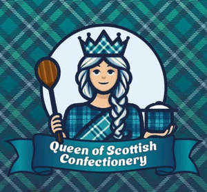

Trade Mark Journal No.2025/014 4 April 2025
UK00004162614 19 February 2025 (21,25,30,35)

- Class 21
- Kitchen utensils; Spatulas [kitchen utensils]; Mixing spoons [kitchen utensils]; Cooking utensils; Baking utensils; Cooking utensils, non-electric; Serving spoons; Bowls; Sugar bowls; Bowls for candy; Pots; Plates.
- Class 25
- Hats; Hoodies; Sweatshirts; insofar as knitwear goods are concerned, all to have been produced in Scotland; Aprons; Polo shirts; T-shirts.
- Class 30
- Confectionery; Chocolate confectionery; Sugar confectionery; Dairy confectionery; Marshmallow confectionery; Chocolate-coated sugar confectionery; Confectionery items coated with chocolate; Tablet (confectionary); Mint flavoured confectionery (Non-medicated -); Chocolate biscuits; insofar as biscuits, shortbread, and tablet (confectionery) goods are concerned, all to have been produced in Scotland; Mallows [confectionery]; Sweets [candy]; Fudge; Milk chocolate teacakes; Marshmallow filled chocolates; Marshmallow topping; Honeycomb toffee; Peppermint sweets; Coconut macaroons.
- Class 35
- Retail services in relation to confectionery; Online retail services relating to clothing; Wholesale services in relation to confectionery; Mail order retail services for clothing accessories; insofar as knitwear, biscuit, shortbread, and tablet (confectionery) are concerned, all to have been produced in Scotland; Online marketing; Online advertising; On-line advertising and marketing services.
David Rough
Valerie Rough
Representative: Alan A G Rae